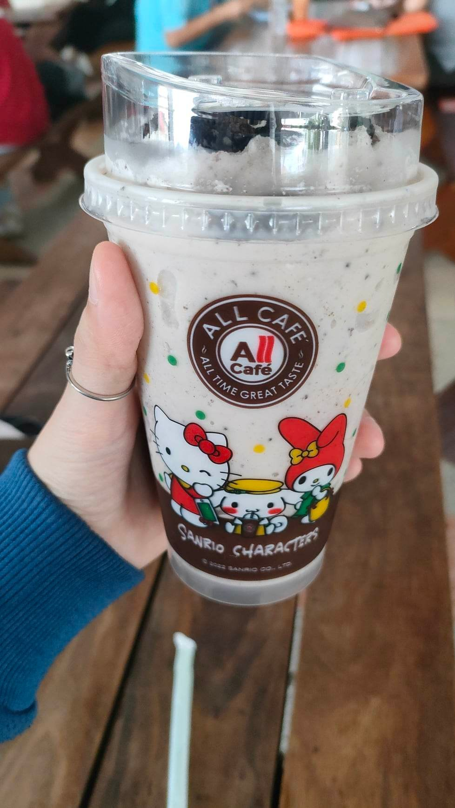
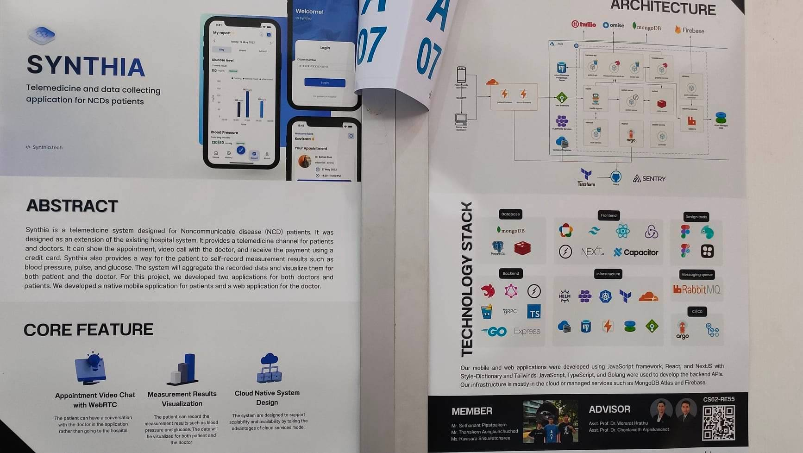
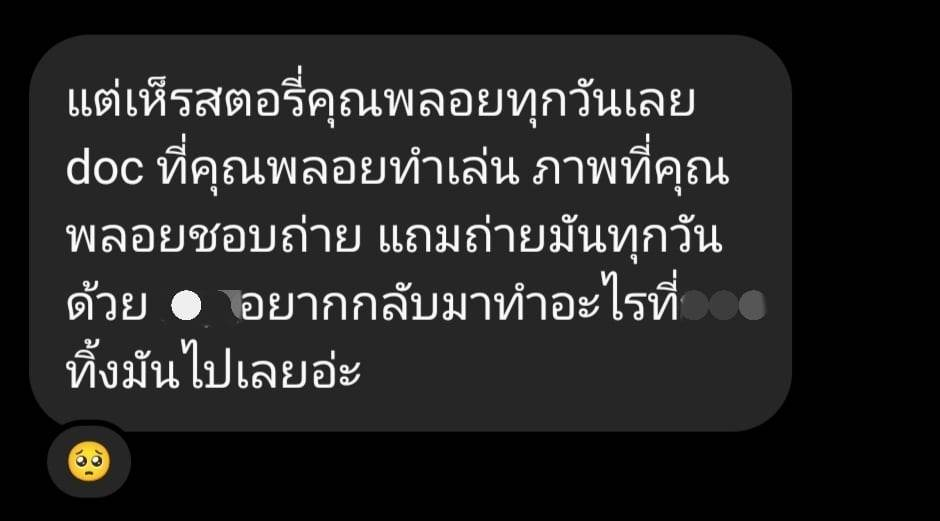

วันที่ 23 พฤศจิกายน 2022 🌓
วันนี้เป็นวันคืนเดือนมืด
พลอยเริ่มวันด้วยการตามใจตัวเอง กินน้ำอร่อย ๆ
อย่างโอริโอปั่นเฮเซลนัท

วันนี้มีงาน D-Day ได้ไปเที่ยวชมมาพักนึง แล้วก็ออกมาปั่น
Webtech ต่อ

ได้เจอเพื่อน ๆ ด้วย คิดถึง ๆ !
ก็ยังคงอยากกลับไปสนิทกับเพื่อนคนนึงเหมือนเดิม
อยากไปไหนมาไหนกับกลุ่มเพื่อนอีกครั้ง
พอกลับหอมามันเพราะงานรุมแล้วยังทำไม่ได้ เครียดสะสม
เลยทำให้เหนื่อยเพลียแล้วคิดอะไรไปเรื่อยด้วยล่ะมั้ง เรื่องต่าง
ๆ เลยเข้ามาในหัว รวมถึงเรื่องที่กะจะไม่รู้สึกอะไรด้วยเช่นกัน
ทำให้สุดท้ายพลอยก็น้ำตาซึมออกมานิดหน่อย
บางทีที่ผ่านมามันอาจอดทนมามากแล้วนิดหน่อย แล้ววันนั้นพลอยก็เลยระบายนิดหน่อยด้วยการลงสตอรี่ เพราะเป็นวันที่พลอยตัดสินใจว่า จะบอกทุกอย่างให้ตรงไปตรงมาเท่าที่จะทำได้ และตัวเองสามารถรับผลที่ตามมาไหว ตอนแรกพลอยก็หวังให้มันเป็นวันที่มีความสุข แต่มันยากไป เลยลดสเกลให้เหลือประมาณนั้น
แต่นั่นล่ะ พลอยลงสตอรี่ไป ก็มีคนเข้ามาหา 3 - 4 คนได้ เข้ามาถามว่าเป็นอะไร กอด ๆ บอกให้พลอยระบายมัน สุดท้ายแล้วคนที่ปลอบประโลมพลอยได้มากที่สุดคือเพื่อนในกลุ่ม พลอยไม่ได้หวังให้ใครปลอบพลอยเลยด้วยซ้ำ ก็แค่ทำตามใจตัวเอง

แต่เพื่อนคนนั้นก็ปลอบพลอย บอกว่าพลอยทำให้เขามีกำลังใจในการทำเรื่องที่ชอบ ทำให้เขามีความสุข แล้วก็คิดถึงพลอย นั่นทำให้พลอยร้องไห้หนักมาก พลอยแค่อยากได้ยิน อยากรู้ว่าพลอยมีค่ากับคนคนนึง มีประโยชน์กับอะไรบ้าง พลอยก็มีส่วนที่ดี พลอยไม่ได้เลวร้ายและแปลกแยกออกไป ไม่รู้สิ พลอยก็แค่อยากได้ยินประโยคแบบนั้นล่ะ แล้วก็ดีใจที่อย่างน้อยก็เหมือนว่าจะมี เพื่อน ที่รักสิ่งที่พลอยเป็น อะไรแบบนั้นมั้ง สุดท้าย พลอยไม่ได้ร้องไห้เพราะเสียใจ แต่พลอยร้องไห้เพราะดีใจ ขอบคุณเพื่อนคนนั้นมาก ๆ แล้วก็ขอบคุณทุกคนที่เป็นห่วง และรักพลอยเสมอมา